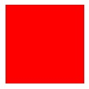
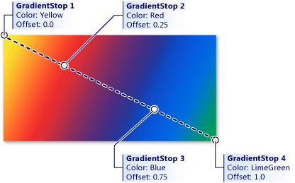
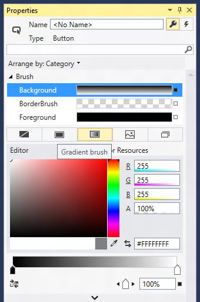
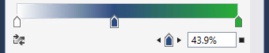
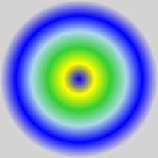
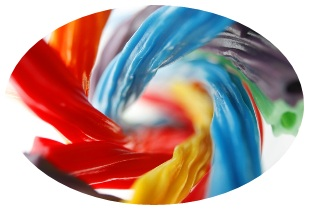

Using brushes to paint backgrounds, foregrounds, and outlines
Use Brush objects to paint the interiors and outlines of XAML shapes, text, and controls, making them visible in your application UI.
Important APIs: Brush class
Introduction to brushes
To paint a Shape, text, or parts of a Control that is displayed on the app canvas, set the Fill property of the Shape or the Background and Foreground properties of a Control to a Brush value.
The different types of brushes are:
- AcrylicBrush
- SolidColorBrush
- LinearGradientBrush
- RadialGradientBrush
- ImageBrush
- WebViewBrush
- XamlCompositionBrushBase
Solid color brushes
A SolidColorBrush paints an area with a single Color, such as red or blue. This is the most basic brush. In XAML, there are three ways to define a SolidColorBrush and the color it specifies: predefined color names, hexadecimal color values, or the property element syntax.
Predefined color names
You can use a predefined color name, such as Yellow or Magenta. There are 256 available named colors. The XAML parser converts the color name to a Color structure with the correct color channels. The 256 named colors are based on the X11 color names from the Cascading Style Sheets, Level 3 (CSS3) specification, so you may already be familiar with this list of named colors if you have previous experience with web development or design.
Here's an example that sets the Fill property of a Rectangle to the predefined color Red.
<Rectangle Width="100" Height="100" Fill="Red" />

SolidColorBrush applied to a Rectangle
If you are defining a SolidColorBrush using code rather than XAML, each named color is available as a static property value of the Colors class. For example, to declare a Color value of a SolidColorBrush to represent the named color "Orchid", set the Color value to the static value Colors.Orchid.
Hexadecimal color values
You can use a hexadecimal format string to declare precise 24-bit color values with 8-bit alpha channel for a SolidColorBrush. Two characters in the range 0 to F define each component value, and the component value order of the hexadecimal string is: alpha channel (opacity), red channel, green channel, and blue channel (ARGB). For example, the hexadecimal value "#FFFF0000" defines fully opaque red (alpha="FF", red="FF", green="00", and blue="00").
This XAML example sets the Fill property of a Rectangle to the hexadecimal value "#FFFF0000", and gives an identical result to using the named color Colors.Red.
<StackPanel>
<Rectangle Width="100" Height="100" Fill="#FFFF0000" />
</StackPanel>
Property element syntax
You can use property element syntax to define a SolidColorBrush. This syntax is more verbose than the previous methods, but you can specify additional property values on an element, such as the Opacity. For more info on XAML syntax, including property element syntax, see the XAML overview and XAML syntax guide.
In the previous examples, the brush being created is created implicitly and automatically, as part of a deliberate XAML language shorthand that helps keep UI definitions simple for the most common cases. The next example creates a Rectangle and explicitly creates the SolidColorBrush as an element value for a Rectangle.Fill property. The Color of the SolidColorBrush is set to Blue and the Opacity is set to 0.5.
<Rectangle Width="200" Height="150">
<Rectangle.Fill>
<SolidColorBrush Color="Blue" Opacity="0.5" />
</Rectangle.Fill>
</Rectangle>
Linear gradient brushes
A LinearGradientBrush paints an area with a gradient that's defined along a line. This line is called the gradient axis. You specify the gradient's colors and their locations along the gradient axis using GradientStop objects. By default, the gradient axis runs from the upper left corner to the lower right corner of the area that the brush paints, resulting in a diagonal shading.
The GradientStop is the basic building block of a gradient brush. A gradient stop specifies what the Color of the brush is at an Offset along the gradient axis, when the brush is applied to the area being painted.
The gradient stop's Color property specifies the color of the gradient stop. You can set the color by using a predefined color name or by specifying the hexadecimal ARGB values.
The Offset property of a GradientStop specifies the position of each GradientStop along the gradient axis. The Offset is a double that ranges from 0 to 1. An Offset of 0 places the GradientStop at the start of the gradient axis, in other words near its StartPoint. An Offset of 1 places the GradientStop at the EndPoint. At a minimum, a useful LinearGradientBrush should have two GradientStop values, where each GradientStop should specify a different Color and have a different Offset between 0 and 1.
This example creates a linear gradient with four colors and uses it to paint a Rectangle.
<!-- This rectangle is painted with a diagonal linear gradient. -->
<Rectangle Width="200" Height="100">
<Rectangle.Fill>
<LinearGradientBrush StartPoint="0,0" EndPoint="1,1">
<GradientStop Color="Yellow" Offset="0.0" x:Name="GradientStop1"/>
<GradientStop Color="Red" Offset="0.25" x:Name="GradientStop2"/>
<GradientStop Color="Blue" Offset="0.75" x:Name="GradientStop3"/>
<GradientStop Color="LimeGreen" Offset="1.0" x:Name="GradientStop4"/>
</LinearGradientBrush>
</Rectangle.Fill>
</Rectangle>
The color of each point between gradient stops is linearly interpolated as a combination of the color specified by the two bounding gradient stops. The following image highlights the gradient stops in the previous example. The circles mark the position of the gradient stops, and the dashed line shows the gradient axis.

Combination of colors specified by the two bounding gradient stops
You can change the line at which the gradient stops are positioned by setting the StartPoint and EndPoint properties to be different values than the (0,0) and (1,1) starting defaults. By changing the StartPoint and EndPoint coordinate values, you can create horizontal or vertical gradients, reverse the gradient direction, or condense the gradient spread to apply to a smaller range than the full painted area. To condense the gradient, you set values of StartPoint and/or EndPoint to be something that is between the values 0 and 1. For example, if you want a horizontal gradient where the fade all happens on the left half of the brush and the right side is solid to your last GradientStop color, you specify a StartPoint of (0,0) and an EndPoint of (0.5,0).
Use tools to make gradients
Now that you know how linear gradients work, you can use Visual Studio or Blend to make creating these gradients easier. To create a gradient, select the object you want to apply a gradient to on the design surface or in XAML view. Expand Brush and select the Linear Gradient tab.

Creating a linear gradient in Visual Studio
Now you can change the colors of the gradient stops and slide their positions using the bar on the bottom. You can also add new gradient stops by clicking on the bar and remove them by dragging the stops off of the bar (see next screenshot).

Gradient setting slider
Radial gradient brushes
A RadialGradientBrush is drawn within an ellipse that is defined by the Center, RadiusX, and RadiusY properties. Colors for the gradient start at the center of the ellipse and end at the radius.
The colors for the radial gradient are defined by color stops added to the GradientStops collection property. Each gradient stop specifies a color and an offset along the gradient.
The gradient origin defaults to center and can be offset using the GradientOrigin property.
MappingMode defines whether Center, RadiusX, RadiusY, and GradientOrigin represent relative or absolute coordinates.
When MappingMode is set to RelativeToBoundingBox, the X and Y values of the three properties are treated as relative to the element bounds, where (0,0) represents the top left and (1,1) represents the bottom right of the element bounds for the Center, RadiusX, and RadiusY properties and (0,0) represents the center for the GradientOrigin property.
When MappingMode is set to Absolute, the X and Y values of the three properties are treated as absolute coordinates within the element bounds.
This example creates a linear gradient with four colors and uses it to paint a Rectangle.
<!-- This rectangle is painted with a radial gradient. -->
<Rectangle Width="200" Height="200">
<Rectangle.Fill>
<media:RadialGradientBrush>
<GradientStop Color="Blue" Offset="0.0" />
<GradientStop Color="Yellow" Offset="0.2" />
<GradientStop Color="LimeGreen" Offset="0.4" />
<GradientStop Color="LightBlue" Offset="0.6" />
<GradientStop Color="Blue" Offset="0.8" />
<GradientStop Color="LightGray" Offset="1" />
</media:RadialGradientBrush>
</Rectangle.Fill>
</Rectangle>
The color of each point between gradient stops is radially interpolated as a combination of the color specified by the two bounding gradient stops. The following image highlights the gradient stops in the previous example.

Gradient stops
Image brushes
An ImageBrush paints an area with an image, with the image to paint coming from an image file source. You set the ImageSource property with the path of the image to load. Typically, the image source comes from a Content item that is part of your app's resources.
By default, an ImageBrush stretches its image to completely fill the painted area, possibly distorting the image if the painted area has a different aspect ratio than the image. You can change this behavior by changing the Stretch property from its default value of Fill and setting it as None, Uniform, or UniformToFill.
The next example creates an ImageBrush and sets the ImageSource to an image named licorice.jpg, which you must include as a resource in the app. The ImageBrush then paints the area defined by an Ellipse shape.
<Ellipse Height="200" Width="300">
<Ellipse.Fill>
<ImageBrush ImageSource="licorice.jpg" />
</Ellipse.Fill>
</Ellipse>

A rendered ImageBrush
ImageBrush and Image both reference an image source file by Uniform Resource Identifier (URI), where that image source file uses several possible image formats. These image source files are specified as URIs. For more info about specifying image sources, the usable image formats, and packaging them in an app, see Image and ImageBrush.
Brushes and text
You can also use brushes to apply rendering characteristics to text elements. For example, the Foreground property of TextBlock takes a Brush. You can apply any of the brushes described here to text. However, be careful with brushes applied to text, as any background might make the text can be unreadable if you use brushes that bleed into the background. Use SolidColorBrush for readability of text elements in most cases, unless you want the text element to be mostly decorative.
Even when you use a solid color, make sure that the text color you choose has enough contrast against the background color of the text's layout container. The level of contrast between text foreground and text container background is an accessibility consideration.
WebViewBrush
A WebViewBrush is a special type of brush that can access the content normally viewed in a WebView control. Instead of rendering the content in the rectangular WebView control area, WebViewBrush paints that content onto another element that has a Brush-type property for a render surface. WebViewBrush isn't appropriate for every brush scenario, but is useful for transitions of a WebView. For more info, see WebViewBrush.
XamlCompositionBrushBase
XamlCompositionBrushBase is a base class used to create custom brushes that use CompositionBrush to paint XAML UI elements.
This enables "drop down" interoperation between the Windows.UI.Xaml and Windows.UI.Composition layers as described in the Visual Layer overview.
To create a custom brush, create a new class that inherits from XamlCompositionBrushBase and implements the required methods.
For example, this can be used to apply effects to XAML UIElements using a CompositionEffectBrush, such as a GaussianBlurEffect or a SceneLightingEffect that controls the reflective properties of a XAML UIElement when being lit by a XamlLight.
For code examples, see XamlCompositionBrushBase.
Brushes as XAML resources
You can declare any brush to be a keyed XAML resource in a XAML resource dictionary. This makes it easy to replicate the same brush values as applied to multiple elements in a UI. The brush values are then shared and applied to any case where you reference the brush resource as a {StaticResource} usage in your XAML. This includes cases where you have a XAML control template that references the shared brush, and the control template is itself a keyed XAML resource.
Brushes in code
It's much more typical to specify brushes using XAML than it is to use code to define brushes. This is because brushes are usually defined as XAML resources, and because brush values are often the output of design tools or otherwise as part of a XAML UI definition. Still, for the occasional case where you might want to define a brush using code, all the Brush types are available for code instantiation.
To create a SolidColorBrush in code, use the constructor that takes a Color parameter. Pass a value that is a static property of the Colors class, like this:
SolidColorBrush blueBrush = new SolidColorBrush(Windows.UI.Colors.Blue);
Dim blueBrush as SolidColorBrush = New SolidColorBrush(Windows.UI.Colors.Blue)
Windows::UI::Xaml::Media::SolidColorBrush blueBrush{ Windows::UI::Colors::Blue() };
blueBrush = ref new SolidColorBrush(Windows::UI::Colors::Blue);
For WebViewBrush and ImageBrush, use the default constructor and then call other APIs before you attempt to use that brush for a UI property.
- ImageSource requires a BitmapImage (not a URI) when you define an ImageBrush using code. If your source is a stream , use the SetSourceAsync method to initialize the value. If your source is a URI, which includes content in your app that uses the ms-appx or ms-resource schemes, use the BitmapImage constructor that takes a URI. You might also consider handling the ImageOpened event if there are any timing issues with retrieving or decoding the image source, where you might need alternate content to display until the image source is available.
- For WebViewBrush you might need to call Redraw if you've recently reset the SourceName property or if the content of the WebView is also being changed with code.
For code examples, see WebViewBrush, ImageBrush, and XamlCompositionBrushBase.